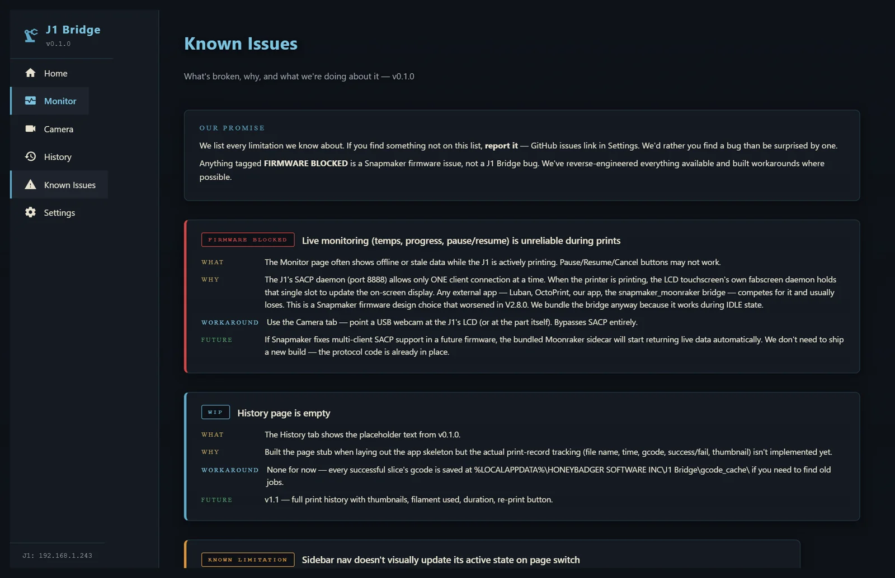

3D printers, machinery, dashboards — they all ship with workflow gaps. We build the polished one-click installers that close them. J1 Bridge has held live monitoring for multiple days on stock V2.8.0 firmware.
OrcaSlicer + Snapmaker J1, finally talking to each other.
Drop an STL on the Home tab. We slice with the correct J1 profile, patch the printer's broken start macro, upload, and start the print. One drag. No Reddit hacks.
Bed + both nozzles + ETA + pause/resume/cancel from your desk. Works on stock V2.8.0 firmware — no Klipper conversion, warranty intact. Validated over multi-day continuous use.
Plug a USB webcam in, pick it from the dropdown. Or point at a network MJPEG stream. No OctoPi flash, no SD card configuration, no separate Pi.
Real Windows installer. No Python, no Docker, no terminal commands. If your grandmother can use Photoshop, she can install J1 Bridge.
Every product ships with a built-in Known Issues tab on day one. No surprises. No marketing claim the code can't back up.
Free for personal use. Patreon for those who want to feed the badger. No telemetry, no analytics, no "phone home."
Screenshots below pulled directly from the live NiceGUI server while an actual print was in progress. Bed at 90°C climbing to 100. Left nozzle locked at 260°C. Right nozzle at ambient (this print only uses T0). Live monitoring has held continuously for multiple days on stock V2.8.0 firmware.



All screenshots captured automatically via Playwright against the production NiceGUI server (localhost:8765) on 2026-05-28. App icons are the actual J1 Bridge brand. Honey Badger backgrounds are bundled with the installer.
Drag-drop slice, live monitor, camera tab, Known Issues page. Installer + Patreon launch imminent.
"Release LCD" toggle, dual-extruder T1 readout polish, multi-printer dashboard support, auto-updater stability.
Pi 4 + PiCAN2 + 10-15" touchscreen reading the raw CAN bus on 2014-2019 C7 Corvettes. Open-source firmware + optional turnkey kit.
Plant-scale operator dashboards, scaling from 1 to 150 blenders. The pattern feeds back into everything else.
Public release lands with the Patreon launch. ⭐ the GitHub profile or follow the brand below to get pinged when v0.1.0 drops.
No email list yet — we'll add one when Patreon is live. For now, GitHub watch is the cleanest signal.